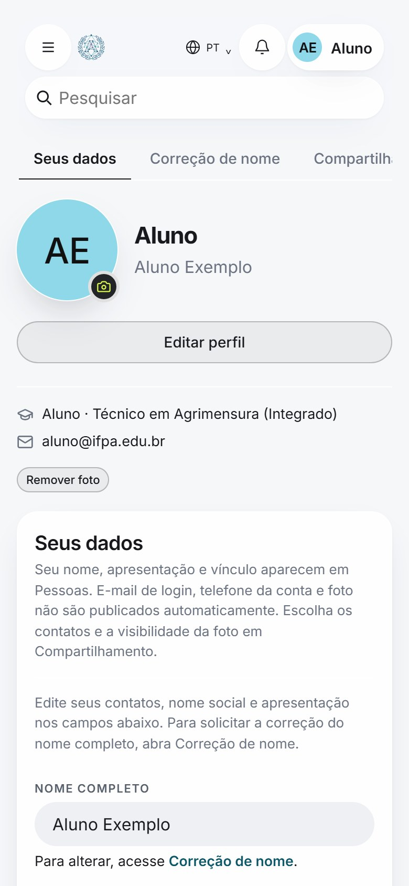
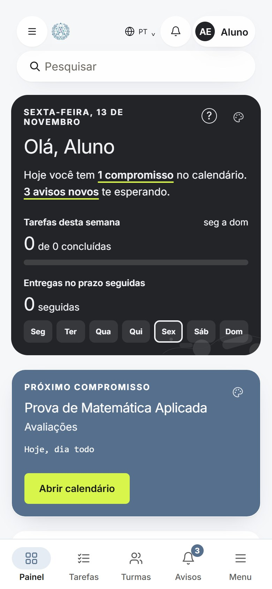
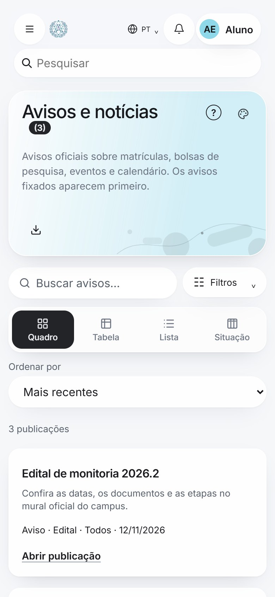
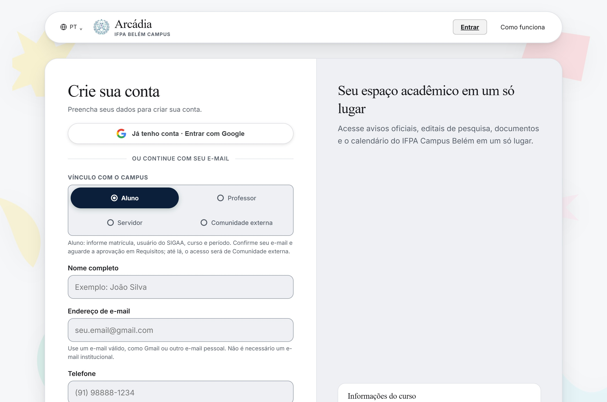
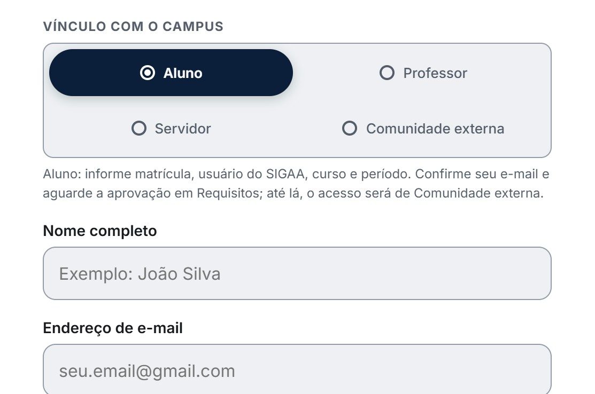
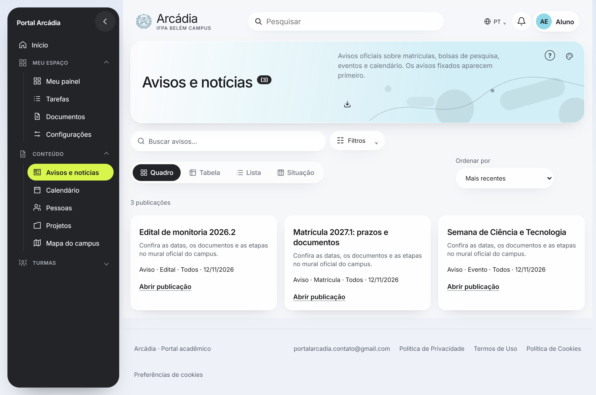

Alcance
Um canal para todos os públicos
Discentes, docentes e servidores acessam as mesmas informações, no mesmo lugar.
Sem informações espalhadas entre redes sociais, aplicativos de mensagens e e-mails. A Arcádia reúne o que estudantes, docentes e servidores precisam acompanhar.
Gratuito para toda a comunidade acadêmica. Cadastre-se com seu e-mail.
O que é a Arcádia
A Arcádia centraliza, organiza e dissemina informações institucionais. Porque a comunicação é fundamental para o funcionamento de uma instituição de ensino.
Alcance
Discentes, docentes e servidores acessam as mesmas informações, no mesmo lugar.
Agilidade
Acesso às informações a qualquer hora, pelo navegador, assim que forem publicadas.
Participação
Maior participação e integração entre os diferentes públicos da instituição.
Depois de entrar
Funcionalidades para publicação e organização de notícias e avisos institucionais.
Do início do período de matrícula aos comunicados do dia, reunidos em um só mural.
Aluno, professor ou servidor: consulte avisos por público-alvo.
Acompanhe solicitações de certificados, comprovantes de matrícula, declarações e históricos.
Provas, reposições, feriados e eventos do semestre publicados pela secretaria acadêmica.
Bolsas PIBIC, feiras de robótica, laboratórios de pesquisa e iniciativas de extensão.
 IFPA Campus Belém inaugura espaço de convivência para servidores técnico-administrativos
Ver no Instagram (abre em nova aba)
IFPA Campus Belém inaugura espaço de convivência para servidores técnico-administrativos
Ver no Instagram (abre em nova aba)
 IFPA Campus Belém celebra conquista de novos profissionais em solenidade de conclusão de cursos técnicos
Ver no Instagram (abre em nova aba)
IFPA Campus Belém celebra conquista de novos profissionais em solenidade de conclusão de cursos técnicos
Ver no Instagram (abre em nova aba)
Para quem
Discentes, docentes e servidores dependem do acesso a avisos, notícias e eventos para organizar suas rotinas acadêmicas. A comunidade externa também acompanha as publicações públicas.
Períodos de matrícula, editais de iniciação científica e eventos, sem depender de redes sociais ou da comunicação oral.
Publicação de avisos e eventos para as turmas, melhorando o fluxo de comunicação institucional.
Redução de falhas comunicacionais e otimização dos processos administrativos, com informações padronizadas.
Em qualquer dispositivo
Funciona no navegador do computador, do tablet e do celular, sem precisar instalar nada.
Criar conta
Seu perfil
Foto, nome e contatos do seu jeito.

Meu painel
Tarefas e compromissos do dia.

Avisos
O mural oficial do campus.
Como funciona
Organização e acessibilidade das informações, do cadastro ao mural.
Criar conta
1 Cadastro
Cadastre-se com seu e-mail. É gratuito.

2 Vínculo
Aluno, professor, servidor ou comunidade externa.

3 Mural
Acompanhe notícias, avisos e eventos no computador ou no celular.
Não encontrou o que procura? Fale com a equipe.
Qualquer pessoa pode consultar as publicações públicas. Alunos podem criar uma conta com e-mail, senha e um curso cadastrado. Quem não tem vínculo com o campus pode escolher Comunidade externa; essa conta não dá acesso às funções institucionais. Contas de professor e servidor dependem de validação administrativa.
A entrada é por e-mail e senha. Quando habilitado, o Google permite entrar em uma conta já cadastrada, após vincular com sua senha. A recuperação de senha depende do serviço de envio de e-mail configurado. Se ele estiver indisponível, a tela informa o problema.
Não. O uso da Arcádia é gratuito. Este é um projeto acadêmico; não há plano de assinatura nem cobrança para criar conta ou usar os recursos disponíveis.
Selecionar um vínculo no formulário não concede permissões de professor ou servidor. Esses perfis precisam de autorização da administração do projeto; usar um e-mail institucional, por si só, não comprova o cargo. No cadastro, Professor e Servidor ficam como solicitação até a aprovação; enquanto isso, a conta tem acesso de Comunidade externa. Não há verificação automática de vínculo com sistemas do IFPA nem confirmação automática por e-mail.
Não. A Arcádia é um projeto acadêmico para organizar publicações, tarefas, projetos e solicitações. Não consulta nem altera automaticamente notas, matrículas ou registros no SIGAA. Na aba Documentos, você acompanha solicitações; isso não gera um documento oficial automaticamente. O download fica disponível quando um arquivo é cadastrado na solicitação pela equipe responsável.
Sim. Você pode acessar pelo navegador do celular, com conexão à internet, sem instalar um aplicativo. A navegação lateral e os filtros se recolhem em telas menores para dar espaço ao conteúdo. O tema claro, escuro ou automático pode ser escolhido nas Configurações.
Um meio mais organizado de acesso às informações institucionais. Crie sua conta com seu e-mail.
Informações e novidades compartilhadas com toda a comunidade.
Carregando notícias…
Conheça os projetos aprovados do campus. Para participar, acesse seu painel.
Carregando projetos…